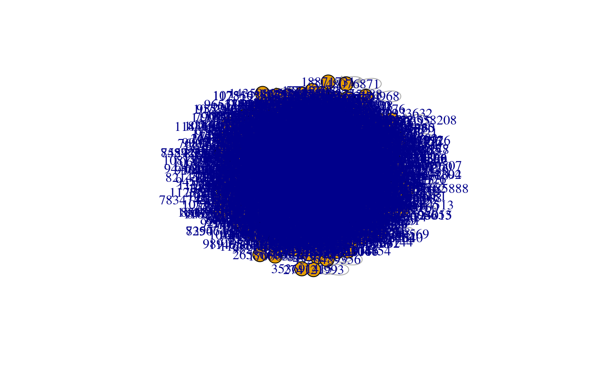

Convert Various Objects to igraph graphs.
as_tweet_igraph(x, ...) as_igraph(x, ...) # S3 method for proto_net as_tweet_igraph(x, ...) # S3 method for data.frame as_tweet_igraph(x, ...)
| x | Tweet data frame or |
|---|---|
| ... | Arguments passed to |
path_to_tweet_file <- example_tweet_file() tweet_df <- read_tweets(path_to_tweet_file) tweet_df %>% as_tweet_igraph()#> IGRAPH 9e6a72d DN-- 1228 1234 -- #> + attr: name (v/c), status_id (e/c), relation (e/c) #> + edges from 9e6a72d (vertex names): #> [1] 194250838 ->340309688 #> [2] 825459487821619201 ->966825602 #> [3] 1116228559616397312->3153145782 #> [4] 4374655520 ->4167284315 #> [5] 1172885625068036102->1112877891841343488 #> [6] 1132474594583928832->1217220278 #> [7] 20737729 ->39334221 #> [8] 2198859787 ->3096758526 #> + ... omitted several edges#> IGRAPH b842d89 DN-- 1228 1234 -- #> + attr: name (v/c), status_id (e/c), relation (e/c) #> + edges from b842d89 (vertex names): #> [1] 194250838 ->340309688 #> [2] 825459487821619201 ->966825602 #> [3] 1116228559616397312->3153145782 #> [4] 4374655520 ->4167284315 #> [5] 1172885625068036102->1112877891841343488 #> [6] 1132474594583928832->1217220278 #> [7] 20737729 ->39334221 #> [8] 2198859787 ->3096758526 #> + ... omitted several edgestweet_df %>% as_tweet_igraph(all_status_data = TRUE)#> IGRAPH 53bdf64 DN-- 1228 1234 -- #> + attr: name (v/c), status_id (e/c), relation (e/c), created_at (e/n), #> | text (e/c), status_url (e/c), source (e/c), is_quote (e/l), #> | is_retweeted (e/l), media_url (e/x), media_type (e/x), place_url #> | (e/c), place_name (e/c), place_full_name (e/c), place_type (e/c), #> | country (e/c), country_code (e/c), bbox_coords (e/x), status_type #> | (e/c) #> + edges from 53bdf64 (vertex names): #> [1] 862716349054935040->845302547686526982 #> [2] 862716349054935040->845302547686526982 #> [3] 862716349054935040->1579930886 #> + ... omitted several edgestweet_df %>% as_tweet_igraph(all_user_data = TRUE)#> IGRAPH 300c67f DN-- 1228 1234 -- #> + attr: name (v/c), timestamp_ms (v/n), name.y (v/c), screen_name #> | (v/c), location (v/c), description (v/c), url (v/c), protected (v/l), #> | followers_count (v/n), friends_count (v/n), listed_count (v/n), #> | statuses_count (v/n), favourites_count (v/n), account_created_at #> | (v/n), verified (v/l), profile_url (v/c), account_lang (v/c), #> | profile_banner_url (v/c), profile_image_url (v/c), bbox_coords (v/x), #> | status_id (e/c), relation (e/c) #> + edges from 300c67f (vertex names): #> [1] 194250838 ->340309688 825459487821619201 ->966825602 #> [3] 1116228559616397312->3153145782 4374655520 ->4167284315 #> + ... omitted several edges#> [1] -0.5000000 -0.5000000 -0.5000000 -0.5000000 -0.5000000 -0.5000000 #> [7] -0.5000000 -0.5000000 -0.5000000 -0.5000000 -0.5000000 -0.5000000 #> [13] -0.5000000 -0.5000000 -0.5000000 -0.5000000 -0.5000000 -0.5000000 #> [19] -0.5000000 -0.5000000 -0.5000000 -0.5000000 -0.5000000 -0.5000000 #> [25] -0.5000000 -0.5000000 -0.5000000 -0.5000000 -0.5000000 -0.5000000 #> [31] -0.5000000 -0.5000000 -0.5000000 -0.5000000 -0.5000000 -0.5000000 #> [37] -0.5000000 -0.5000000 -0.5000000 -0.5000000 -0.5000000 -0.5000000 #> [43] -0.5000000 -0.5000000 -0.5000000 -0.5000000 -0.5000000 -0.5000000 #> [49] -0.5000000 -0.5000000 -0.5000000 -0.5000000 -0.5000000 -0.5000000 #> [55] -0.5000000 -0.5000000 -0.5000000 -0.5000000 -0.5000000 -0.5000000 #> [61] -0.5000000 -0.5000000 -0.5000000 -0.5000000 -0.5000000 -0.5000000 #> [67] -0.5000000 -0.5000000 -0.5000000 -0.5000000 -0.5000000 -0.5000000 #> [73] -0.5000000 -0.5000000 -0.5000000 -0.5000000 -0.5000000 -0.5000000 #> [79] -0.5000000 -0.5000000 -0.5000000 -0.5000000 -0.5000000 -0.5000000 #> [85] -0.5000000 -0.5000000 -0.5000000 -0.5000000 -0.5000000 -0.5000000 #> [91] -0.5000000 -0.5000000 -0.5000000 -0.5000000 -0.5000000 -0.5000000 #> [97] -0.5000000 -0.5000000 -0.5000000 -0.5000000 -0.5000000 -0.5000000 #> [103] -0.5000000 -0.5000000 -0.5000000 -0.5000000 -0.5000000 -0.5000000 #> [109] -0.5000000 -0.5000000 -0.5000000 -0.5000000 -0.5000000 -0.5000000 #> [115] -0.5000000 -0.5000000 -0.5000000 -0.5000000 -0.5000000 -0.5000000 #> [121] -0.5000000 -0.5000000 -0.5000000 -0.5000000 -0.5000000 -0.5000000 #> [127] -0.5000000 -0.5000000 -0.5000000 -0.5000000 -0.5000000 -0.5000000 #> [133] -0.5000000 -0.5000000 -0.5000000 -0.5000000 -0.5000000 -0.5000000 #> [139] -0.5000000 -0.5000000 -0.5000000 -0.5000000 -0.5000000 -0.5000000 #> [145] -0.5000000 -0.5000000 -0.5000000 -0.5000000 -0.5000000 -0.5000000 #> [151] -0.5000000 -0.5000000 -0.5000000 -0.5000000 -0.5000000 -0.5000000 #> [157] -0.5000000 -0.5000000 -0.5000000 -0.5000000 -0.5000000 -0.5000000 #> [163] -0.5000000 -0.5000000 -0.5000000 -0.5000000 -0.5000000 -0.5000000 #> [169] -0.5000000 -0.5000000 -0.5000000 -0.5000000 -0.5000000 -0.5000000 #> [175] -0.5000000 -0.5000000 -0.5000000 -0.5000000 -0.5000000 -0.5000000 #> [181] -0.5000000 -0.5000000 -0.5000000 -0.5000000 -0.5000000 -0.5000000 #> [187] -0.5000000 -0.5000000 -0.5000000 -0.5000000 -0.5000000 -0.5000000 #> [193] -0.5000000 -0.5000000 -0.5000000 -0.5000000 -0.5000000 -0.5000000 #> [199] -0.5000000 -0.5000000 -0.5000000 -0.5000000 -0.5000000 -0.5000000 #> [205] -0.5000000 -0.5000000 -0.5000000 -0.5000000 -0.5000000 -0.5000000 #> [211] -0.5000000 -0.5000000 -0.5000000 -0.5000000 -0.5000000 -0.5000000 #> [217] -0.5000000 -0.5000000 -0.5000000 -0.5000000 -0.5000000 -0.5000000 #> [223] -0.5000000 -0.5000000 -0.5000000 -0.5000000 -0.5000000 -0.5000000 #> [229] -0.5000000 -0.5000000 -0.5000000 -0.5000000 -0.5000000 -0.5000000 #> [235] -0.5000000 -0.5000000 -0.5000000 -0.5000000 -0.5000000 -0.5000000 #> [241] -0.5000000 -0.5000000 -0.5000000 -0.5000000 -0.5000000 -0.5000000 #> [247] -0.5000000 -0.5000000 -0.5000000 -0.5000000 -0.5000000 -0.5000000 #> [253] -0.5000000 -0.5000000 -0.5000000 -0.5000000 -0.5000000 -0.5000000 #> [259] -0.5000000 -0.5000000 -0.5000000 -0.5000000 -0.5000000 -0.5000000 #> [265] -0.5000000 -0.5000000 -0.5000000 -0.5000000 -0.5000000 -0.5000000 #> [271] -0.5000000 -0.5000000 -0.5000000 -0.5000000 -0.5000000 -0.5000000 #> [277] -0.5000000 -0.5000000 -0.5000000 -0.5000000 -0.5000000 -0.5000000 #> [283] -0.5000000 -0.5000000 -0.5000000 -0.5000000 -0.5000000 -0.5000000 #> [289] -0.5000000 -0.5000000 -0.5000000 -0.5000000 -0.5000000 -0.5000000 #> [295] -0.5000000 -0.5000000 -0.5000000 -0.5000000 -0.5000000 -0.5000000 #> [301] -0.5000000 -0.5000000 -0.5000000 -0.5000000 -0.5000000 -0.5000000 #> [307] -0.5000000 -0.5000000 -0.5000000 -0.5000000 -0.5000000 -0.5000000 #> [313] -0.5000000 -0.5000000 -0.5000000 -0.5000000 -0.5000000 -0.5000000 #> [319] -0.5000000 -0.5000000 -0.5000000 -0.5000000 -0.5000000 -0.5000000 #> [325] -0.5000000 -0.5000000 -0.5000000 -0.5000000 -0.5000000 -0.5000000 #> [331] -0.5000000 -0.5000000 -0.5000000 -0.5000000 -0.5000000 -0.5000000 #> [337] -0.5000000 -0.5000000 -0.5000000 -0.5000000 -0.5000000 -0.5000000 #> [343] -0.5000000 -0.1666667 -0.5000000 -0.5000000 -0.5000000 -0.5000000 #> [349] -0.5000000 -0.5000000 -0.5000000 -0.5000000 -0.5000000 -0.5000000 #> [355] -0.5000000 -0.5000000 -0.5000000 -0.5000000 -0.5000000 -0.5000000 #> [361] -0.5000000 -0.5000000 -0.5000000 -0.5000000 -0.5000000 -0.5000000 #> [367] -0.5000000 -0.5000000 -0.5000000 -0.5000000 -0.5000000 -0.5000000 #> [373] -0.5000000 -0.5000000 -0.5000000 -0.5000000 -0.5000000 -0.5000000 #> [379] -0.5000000 -0.5000000 -0.5000000 -0.5000000 -0.5000000 -0.5000000 #> [385] -0.5000000 -0.5000000 -0.5000000 -0.5000000 -0.5000000 -0.5000000 #> [391] -0.5000000 -0.5000000 -0.5000000 -0.5000000 -0.5000000 -0.5000000 #> [397] -0.5000000 -0.5000000 -0.5000000 -0.5000000 -0.5000000 -0.5000000 #> [403] -0.5000000 -0.5000000 -0.5000000 -0.5000000 -0.5000000 -0.5000000 #> [409] -0.5000000 -0.5000000 -0.5000000 -0.5000000 -0.5000000 -0.5000000 #> [415] -0.5000000 -0.5000000 -0.5000000 -0.5000000 -0.5000000 -0.5000000 #> [421] -0.5000000 -0.5000000 -0.5000000 -0.5000000 -0.5000000 -0.5000000 #> [427] -0.5000000 -0.5000000 -0.5000000 -0.5000000 0.0000000 0.0000000 #> [433] 0.0000000 0.0000000 0.0000000 0.0000000 0.0000000 0.0000000 #> [439] 0.0000000 0.0000000 0.0000000 0.0000000 0.0000000 0.0000000 #> [445] 0.0000000 0.0000000 0.0000000 0.0000000 0.0000000 0.0000000 #> [451] 0.0000000 0.0000000 0.0000000 0.0000000 0.0000000 0.0000000 #> [457] 0.0000000 0.0000000 0.0000000 0.0000000 0.0000000 0.0000000 #> [463] 0.0000000 0.0000000 0.0000000 0.0000000 0.0000000 0.0000000 #> [469] 0.0000000 0.0000000 0.0000000 0.0000000 0.0000000 0.0000000 #> [475] 0.0000000 0.0000000 0.0000000 0.0000000 0.0000000 0.0000000 #> [481] 0.0000000 0.0000000 0.0000000 0.0000000 0.0000000 0.0000000 #> [487] 0.0000000 0.0000000 0.0000000 0.0000000 0.0000000 0.0000000 #> [493] 0.0000000 0.0000000 0.0000000 0.0000000 0.0000000 0.0000000 #> [499] 0.0000000 0.0000000 0.0000000 0.0000000 0.0000000 0.0000000 #> [505] 0.0000000 0.0000000 0.0000000 0.0000000 0.0000000 0.0000000 #> [511] 0.0000000 0.0000000 0.0000000 0.0000000 0.0000000 -0.5000000 #> [517] 0.0000000 0.0000000 0.0000000 0.0000000 0.0000000 0.0000000 #> [523] 0.0000000 0.0000000 0.0000000 0.0000000 0.0000000 0.0000000 #> [529] 0.0000000 0.0000000 0.0000000 0.0000000 0.0000000 0.0000000 #> [535] 0.0000000 0.0000000 0.0000000 0.0000000 0.0000000 0.0000000 #> [541] 0.0000000 0.0000000 0.0000000 0.0000000 0.0000000 0.0000000 #> [547] 0.0000000 -0.5000000 0.0000000 0.0000000 0.0000000 0.0000000 #> [553] 0.0000000 0.0000000 0.0000000 0.0000000 0.0000000 0.0000000 #> [559] 0.0000000 0.0000000 0.0000000 0.0000000 0.0000000 0.0000000 #> [565] 0.0000000 0.0000000 0.0000000 0.0000000 0.0000000 0.0000000 #> [571] 0.0000000 0.0000000 0.0000000 0.0000000 0.0000000 0.0000000 #> [577] -0.5000000 0.0000000 0.0000000 0.0000000 0.0000000 0.0000000 #> [583] 0.0000000 0.0000000 0.0000000 0.0000000 0.0000000 0.0000000 #> [589] 0.0000000 0.0000000 0.0000000 0.0000000 0.0000000 0.0000000 #> [595] 0.0000000 0.0000000 0.0000000 0.0000000 0.5000000 0.5000000 #> [601] 0.5000000 0.0000000 0.5000000 0.5000000 0.5000000 0.5000000 #> [607] 0.5000000 0.5000000 0.5000000 0.5000000 0.5000000 0.5000000 #> [613] 0.5000000 0.0000000 0.5000000 0.5000000 0.5000000 0.5000000 #> [619] 0.5000000 0.5000000 0.5000000 0.5000000 0.0000000 0.5000000 #> [625] 0.0000000 0.5000000 0.0000000 0.0000000 0.5000000 0.5000000 #> [631] 0.5000000 0.5000000 0.5000000 0.5000000 0.5000000 0.5000000 #> [637] 0.0000000 0.0000000 0.5000000 0.5000000 0.5000000 0.5000000 #> [643] 0.5000000 0.5000000 0.5000000 0.5000000 0.5000000 0.5000000 #> [649] 0.5000000 0.0000000 0.5000000 0.0000000 0.0000000 0.0000000 #> [655] 0.0000000 0.0000000 0.0000000 0.0000000 0.0000000 0.0000000 #> [661] 0.0000000 0.0000000 0.0000000 0.0000000 0.0000000 0.5000000 #> [667] 0.5000000 0.5000000 0.5000000 0.5000000 0.5000000 0.0000000 #> [673] 0.5000000 0.5000000 0.0000000 0.5000000 0.1666667 0.0000000 #> [679] 0.5000000 0.0000000 0.5000000 0.5000000 0.5000000 0.5000000 #> [685] 0.5000000 0.5000000 0.5000000 0.5000000 0.5000000 0.5000000 #> [691] 0.5000000 0.0000000 0.0000000 0.0000000 0.5000000 0.5000000 #> [697] 0.5000000 0.5000000 0.0000000 0.0000000 0.0000000 0.5000000 #> [703] 0.5000000 0.5000000 0.0000000 0.5000000 0.0000000 0.5000000 #> [709] 0.5000000 0.5000000 0.5000000 0.5000000 0.0000000 0.5000000 #> [715] 0.5000000 0.5000000 0.5000000 0.5000000 0.5000000 0.0000000 #> [721] 0.5000000 0.5000000 0.5000000 0.5000000 0.5000000 0.5000000 #> [727] 0.5000000 0.5000000 0.5000000 0.5000000 0.5000000 0.5000000 #> [733] 0.0000000 0.5000000 0.5000000 0.5000000 0.5000000 0.5000000 #> [739] 0.5000000 0.5000000 0.0000000 0.0000000 0.0000000 0.5000000 #> [745] 0.5000000 0.5000000 0.5000000 0.5000000 0.0000000 0.5000000 #> [751] 0.5000000 0.5000000 0.5000000 0.0000000 0.0000000 0.5000000 #> [757] 0.5000000 0.5000000 0.5000000 0.0000000 0.5000000 0.5000000 #> [763] 0.5000000 0.5000000 0.5000000 0.0000000 0.5000000 0.5000000 #> [769] 0.5000000 0.0000000 0.5000000 0.5000000 0.5000000 0.5000000 #> [775] 0.5000000 0.5000000 0.5000000 0.5000000 0.5000000 0.5000000 #> [781] 0.0000000 0.5000000 0.5000000 0.5000000 0.5000000 0.5000000 #> [787] 0.5000000 0.0000000 0.5000000 0.5000000 0.5000000 0.0000000 #> [793] 0.5000000 0.5000000 0.5000000 0.5000000 0.5000000 0.5000000 #> [799] 0.5000000 0.5000000 0.5000000 0.5000000 0.5000000 0.5000000 #> [805] 0.5000000 0.0000000 0.0000000 0.0000000 0.0000000 0.5000000 #> [811] 0.5000000 0.5000000 0.5000000 0.5000000 0.5000000 0.5000000 #> [817] 0.5000000 0.5000000 0.5000000 0.5000000 0.5000000 0.5000000 #> [823] 0.5000000 0.0000000 0.5000000 0.0000000 0.5000000 0.0000000 #> [829] 0.0000000 0.5000000 0.0000000 0.5000000 0.0000000 0.0000000 #> [835] 0.5000000 0.5000000 0.5000000 0.5000000 0.0000000 0.5000000 #> [841] 0.5000000 0.0000000 0.5000000 0.5000000 0.5000000 0.5000000 #> [847] 0.5000000 0.5000000 0.5000000 0.5000000 0.5000000 0.0000000 #> [853] 0.5000000 0.5000000 0.5000000 0.5000000 0.5000000 0.5000000 #> [859] 0.5000000 0.0000000 0.0000000 0.5000000 0.0000000 0.5000000 #> [865] 0.5000000 0.5000000 0.5000000 0.5000000 0.0000000 0.5000000 #> [871] 0.5000000 0.5000000 0.0000000 0.0000000 0.0000000 0.5000000 #> [877] 0.5000000 0.5000000 0.5000000 0.5000000 0.5000000 0.5000000 #> [883] 0.5000000 0.5000000 0.5000000 0.5000000 0.5000000 0.5000000 #> [889] 0.5000000 0.5000000 0.5000000 0.5000000 0.0000000 0.5000000 #> [895] 0.5000000 0.5000000 0.5000000 0.5000000 0.5000000 0.5000000 #> [901] 0.5000000 0.5000000 0.5000000 0.5000000 0.5000000 0.5000000 #> [907] 0.5000000 0.5000000 0.5000000 0.5000000 0.0000000 0.5000000 #> [913] 0.5000000 0.5000000 0.5000000 0.5000000 0.5000000 0.5000000 #> [919] 0.5000000 0.5000000 0.5000000 0.5000000 0.0000000 0.0000000 #> [925] 0.0000000 0.5000000 0.5000000 0.5000000 0.5000000 0.5000000 #> [931] 0.5000000 0.0000000 0.5000000 0.5000000 0.5000000 0.5000000 #> [937] 0.5000000 0.0000000 0.5000000 0.0000000 0.0000000 0.0000000 #> [943] 0.0000000 0.5000000 0.5000000 0.5000000 0.5000000 0.5000000 #> [949] 0.5000000 0.5000000 0.5000000 0.5000000 0.5000000 0.5000000 #> [955] 0.5000000 0.5000000 0.5000000 0.5000000 0.5000000 0.5000000 #> [961] 0.5000000 0.5000000 0.5000000 0.0000000 0.5000000 0.5000000 #> [967] 0.5000000 0.5000000 0.5000000 0.5000000 0.0000000 0.0000000 #> [973] 0.0000000 0.0000000 0.0000000 0.5000000 0.5000000 0.0000000 #> [979] 0.0000000 0.5000000 0.5000000 0.0000000 0.5000000 0.5000000 #> [985] 0.5000000 0.5000000 0.0000000 0.5000000 0.5000000 0.5000000 #> [991] 0.5000000 0.5000000 0.5000000 0.5000000 0.5000000 0.5000000 #> [997] 0.0000000 0.5000000 0.0000000 0.0000000 0.5000000 0.5000000 #> [1003] 0.5000000 0.5000000 0.5000000 0.0000000 0.0000000 0.5000000 #> [1009] 0.5000000 0.5000000 0.0000000 0.5000000 0.0000000 0.0000000 #> [1015] 0.5000000 0.5000000 0.5000000 0.5000000 0.5000000 0.0000000 #> [1021] 0.0000000 0.0000000 0.0000000 0.0000000 0.5000000 0.5000000 #> [1027] 0.5000000 0.5000000 0.5000000 0.5000000 0.5000000 0.5000000 #> [1033] 0.5000000 0.5000000 0.5000000 0.5000000 0.0000000 0.0000000 #> [1039] 0.0000000 0.0000000 0.0000000 0.0000000 0.5000000 0.5000000 #> [1045] 0.5000000 0.5000000 0.5000000 0.5000000 0.0000000 0.0000000 #> [1051] 0.0000000 0.0000000 0.0000000 0.0000000 0.0000000 0.0000000 #> [1057] 0.0000000 0.0000000 0.0000000 0.0000000 0.0000000 0.0000000 #> [1063] 0.0000000 0.0000000 0.0000000 0.0000000 0.5000000 0.5000000 #> [1069] 0.5000000 0.5000000 0.0000000 0.5000000 0.5000000 0.5000000 #> [1075] 0.5000000 0.0000000 0.0000000 0.0000000 0.0000000 0.0000000 #> [1081] 0.0000000 0.5000000 0.0000000 0.5000000 0.5000000 0.5000000 #> [1087] 0.5000000 0.5000000 0.5000000 0.5000000 0.0000000 0.5000000 #> [1093] 0.0000000 0.0000000 0.5000000 0.5000000 0.5000000 -0.5000000 #> [1099] 0.5000000 0.5000000 0.5000000 0.0000000 0.5000000 0.0000000 #> [1105] 0.5000000 0.5000000 0.5000000 0.5000000 0.5000000 0.5000000 #> [1111] 0.0000000 0.5000000 0.5000000 0.5000000 0.5000000 0.5000000 #> [1117] 0.5000000 0.5000000 0.5000000 0.5000000 0.5000000 0.5000000 #> [1123] 0.5000000 0.5000000 0.5000000 0.5000000 0.5000000 0.0000000 #> [1129] 0.5000000 0.5000000 0.5000000 0.5000000 0.5000000 0.5000000 #> [1135] 0.5000000 0.5000000 0.5000000 0.5000000 0.5000000 0.0000000 #> [1141] 0.5000000 0.5000000 0.5000000 0.5000000 0.5000000 0.5000000 #> [1147] 0.5000000 0.5000000 0.5000000 0.5000000 0.5000000 0.0000000 #> [1153] 0.5000000 0.0000000 0.5000000 0.5000000 0.5000000 0.5000000 #> [1159] 0.5000000 0.5000000 0.5000000 0.5000000 0.5000000 0.5000000 #> [1165] 0.0000000 0.5000000 0.5000000 0.0000000 0.5000000 0.5000000 #> [1171] 0.0000000 0.5000000 0.0000000 0.5000000 0.5000000 0.5000000 #> [1177] 0.5000000 0.5000000 0.5000000 0.5000000 0.0000000 0.5000000 #> [1183] 0.5000000 0.0000000 0.0000000 0.0000000 0.5000000 0.0000000 #> [1189] 0.5000000 0.0000000 0.0000000 0.0000000